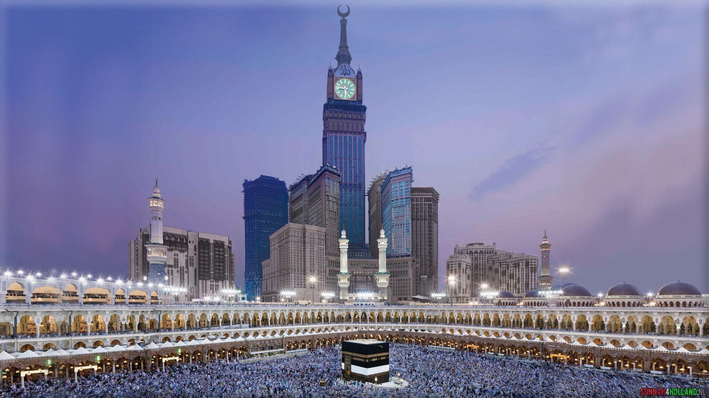

Discover Makkah
Makkah, the holiest city in Islam, is located in western Saudi Arabia. It is the birthplace of the Prophet Muhammad and the site of the Kaaba, the most sacred site in Islam.
It hosts the annual Hajj pilgrimage, one of the five pillars of Islam, and welcomes millions for the Umrah pilgrimage year-round. Key sites include Al Masjid Al Haram, the largest mosque in the world, and the historic Masjid-e-Aisha. Beyond its spiritual significance, visitors can explore the Makkah Museum's pre-Islamic artifacts or shop and play at Makkah Mall.